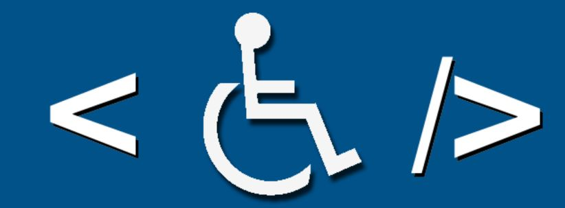

Dicas para tornar seu site acessivel

Tornar um site acessível de acordo com as diretrizes do e-MAG (Modelo de Acessibilidade em Governo Eletrônico) é fundamental para garantir que todas as pessoas, independentemente de suas habilidades ou limitações, possam navegar e interagir de maneira eficaz. Existem várias práticas que podem ser adotadas para alcançar esse objetivo. Em primeiro lugar, é crucial estruturar o conteúdo usando HTML semântico. Isso implica o uso adequado de tags, como (header), (nav), (main), (article), (footer), entre outras, para proporcionar uma compreensão clara da organização da página. Outro aspecto importante é fornecer alternativas para conteúdo não textual. Imagens devem ter descrições alternativas usando o atributo alt em tags (img), e vídeos ou áudios precisam ter legendas ou transcrições disponíveis. O contraste de cores também desempenha um papel crucial na acessibilidade. Manter um bom contraste entre o texto e o fundo é essencial para garantir que o conteúdo seja legível para pessoas com baixa visão. A hierarquia de títulos é uma prática recomendada, utilizando as tags (h1), (h2), etc., para criar uma estrutura significativa e facilitar a navegação por leitores de tela. Além disso, é vital garantir que todas as funcionalidades do site possam ser acessadas e operadas apenas com o teclado. Formulários devem ser projetados com acessibilidade em mente, incluindo rótulos descritivos para campos e marcadores de lista para formulários extensos. Escrever em linguagem simples e clara também contribui para uma experiência mais inclusiva. A realização de testes regulares de acessibilidade usando ferramentas específicas, como o WAVE, é uma prática recomendada. Isso ajuda a identificar e corrigir problemas de acessibilidade antes que o site seja lançado. Além disso, é essencial garantir a compatibilidade com leitores de tela populares, como JAWS, NVDA ou VoiceOver, para que usuários com deficiência visual possam interagir efetivamente com o conteúdo. Se o site oferecer documentos para download, como PDFs, é fundamental garantir que esses documentos também atendam aos princípios de acessibilidade, incluindo texto alternativo para imagens e uma estrutura de leitura lógica. Em resumo, a acessibilidade deve ser uma consideração integral desde o início do desenvolvimento web. Além de ser uma prática ética, a acessibilidade também pode ser uma exigência legal em muitas jurisdições, destacando a importância de criar experiências online inclusivas para todos os usuários.